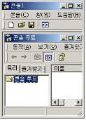
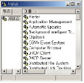

네트워크관리사-2급 (2010-04-25 기출문제)
1과목: TCP/IP
1. ICMP의 Message Type에 대한 설명으로 옳지 않은 것은?
- 0 - Echo Reply
- 5 - Echo Request
- 13 - Timestamp Request
- 17 - Address Mask Request
(정답률: 66%)

2. RIP 프로토콜의 특징에 대한 설명으로 올바른 것은?
- 서브넷 주소를 인식하여 정보를 처리할 수 있다.
- 링크 상태 알고리즘을 사용하므로, 링크 상태에 대한 변화가 빠르다.
- 메트릭으로 유일하게 Hop Count만을 고려한다.
- 대규모 네트워크에서 주로 사용되며, 기본 라우팅 업데이트 주기는 1초이다.
(정답률: 82%)
3. Loopback 주소를 나타내는 특수 IP Address는?
- 127.x.x.x
- 255.255.x.x
- 0.0.x.x
- 1.1.x.x
(정답률: 93%)
4. 인터넷 메일 호스트 사이에 아스키 형식(ASCII Format) 이외의 텍스트 및 화상이나 음성, 영상 등의 멀티미디어 데이터를 아스키 형식으로 변환할 필요 없이 인터넷 전자우편으로 송신하기 위한 인터넷 표준은?
- SMTP
- MIME
- IMAP
- POP
(정답률: 68%)
5. B Class 네트워크에서 6개의 서브넷이 필요할 때, 가장 많은 호스트를 사용할 수 있는 서브넷 마스크 값은?
- 255.255.192.0
- 255.255.224.0
- 255.255.240.0
- 255.255.248.0
(정답률: 62%)
6. 네트워크에서 호스트나 라우터, 다른 컴퓨터나 장치들을 감시하고 관리하기 위한 목적으로 사용되는 응용 계층 표준 프로토콜은?
- SLIP-PPP(Serial Line Internet Protocol, Point to Point Protocol)
- SNMP(Simple Network Management Protocol)
- SMTP(Simple Mail Transfer Protocol)
- SDP((Session Description Protocol)
(정답률: 92%)
7. 정적 라우팅의 사용이 적절한 환경은?
- 네트워크 규모가 크고, 다른 네트워크에 대한 접속점이 여럿이고, 경로가 이중화되어 있지 않은 조건
- 네트워크 규모가 작고, 다른 네트워크에 대한 접속점이 하나이고, 경로가 이중화되어 있지 않은 조건
- 네트워크 규모가 작고, 다른 네트워크에 대한 접속점이 하나이고, 경로가 이중화되어 있는 조건
- 네트워크 규모가 크고, 다른 네트워크에 대한 접속점이 여럿이고, 경로가 이중화되어 있는 조건
(정답률: 78%)
8. TCP/IP의 프로토콜에서 응용 계층에서 제공하는 응용 서비스 프로토콜로, 컴퓨터 사용자들 사이에 전자우편을 교환하는 서비스를 제공하는 프로토콜은?
- SNMP
- SMTP
- VT
- FTP
(정답률: 91%)
9. IP에 관한 설명 중 옳지 않은 것은?
- 비신뢰성 서비스
- 비연결형 서비스
- 데이터그램 형태의 전송
- 에러 제어
(정답률: 77%)
10. TCP/IP 응용 프로토콜이 아닌 것은?
- SMTP(Simple Mail Transfer Protocol)
- CMIP(Common Management Information Protocol)
- TFTP(Trivial File Transfer Protocol)
- SNMP(Simple Network Management Protocol)
(정답률: 62%)
11. TCP 헤더에는 수신측 버퍼의 크기에 맞춰 송신측에서 데이터의 크기를 적절하게 조절할 수 있게 해주는 필드가 있다. 이 필드를 이용한 흐름 제어 기법은?
- Sliding Window
- Stop and Wait
- Xon/Xoff
- CTS/RTS
(정답률: 69%)
12. HTTP의 동작 방식에 대한 설명으로 옳지 않은 것은?
- Connection - 클라이언트와 서버 간의 연결을 설정한다.
- Request - 클라이언트가 서버에게 정보를 요청한다.
- Response - 클라이언트가 요청사항을 처리한 후 결과를 서버에 전송한다.
- Close - 클라이언트 서버 간의 연결을 해제한다.
(정답률: 70%)
13. UDP 헤더에 포함이 되지 않는 항목은?
- 확인 응답 번호(Acknowledgment Number)
- 소스 포트(Source Port) 주소
- 체크섬(Checksum) 필드
- 목적지 포트(Destination Port) 주소
(정답률: 62%)
14. 웹 페이지를 전달하는데 사용하는 HTTP가 사용하는 기본 포트 번호는?
- 21번
- 23번
- 53번
- 80번
(정답률: 92%)
15. 호스트 컴퓨터 "icqa.or.kr"에 텔넷으로 접속하기 위해 "Telnet icqa.or.kr:1094"라고 명령을 입력한 경우 "1094"의 의미는?
- User ID
- Port Number
- IP Address
- Network Address
(정답률: 90%)
16. OSI 7 Layer와 TCP/IP 동작과의 관계에서, 각 계층과 프로토콜과의 관계를 올바르게 연결된 것은?
- 전송 계층 - Ethernet
- 물리 계층 - TCP
- 응용 계층 - ARP
- 네트워크 계층 - IGMP
(정답률: 76%)
17. IP Address 설정에 관한 내용으로 올바른 것은?
- IP Address는 네트워크 주소와 호스트 주소로 구성된다.
- IPv6에서 IP Address의 크기는 32Bits이다.
- IP Address의 A,B,C Class에서 존재 할 수 있는 네트워크의 개수는 “A > B > C” 순이다.
- IP Address 중 ‘255’는 Broadcast 하기 위해 이용되고, 주소가 모두 ’0‘일 때는 로컬 호스트를 가리킨다.
(정답률: 68%)
2과목: 네트워크 일반
18. 1924년에 설립된 것으로 전기 장비 제조분야에서 ANSI가 인정하는 기구이며, 주로 물리매체의 인터페이스에 관한 표준안 즉, RS 표준안을 제정하는 단체는?
- IEEE
- ISO
- IEC
- EIA
(정답률: 48%)
19. 프로토콜의 기본적인 기능 중에서 수신측에서 데이터 전송량이나 전송 속도 등을 조절하는 기능은?
- Flow Control
- Error Control
- Sequence Control
- Connection Control
(정답률: 80%)
20. Ethernet에 관한 설명으로 옳지 않은 것은?
- 데이터 전송을 위해 CSMA/CD 방식을 사용한다.
- "XEROX"사 에서 제안했다.
- 전송 매체로는 UTP, STP 케이블 등을 사용하며, 각 기기를 상호 연결시키는 데에는 허브, 스위치, 리피터 등의 장치를 이용한다.
- 네트워크에 연결된 각 기기들은 64비트 길이의 MAC 주소를 사용하여 데이터를 주고받는다.
(정답률: 67%)
21. 시분할 다중화(TDM) 방법에 대한 설명으로 옳지 않은 것은?
- 디지털 전송에 쓰인다.
- 동기식 방법과 비동기식 방법이 있다.
- 주파수 편이 변복조(FSK)의 역할을 수행한다.
- T1 다중화는 시분할 다중화 방법이다.
(정답률: 73%)
22. IEEE 표준에서 정의하는 기술의 연결이 옳지 않은 것은?
- IEEE 802.3 - Ethernet
- IEEE 802.4 - Token Ring
- IEEE 802.11 - Wireless LAN
- IEEE 802.15 - Wireless PAN
(정답률: 70%)
23. OSI 7 Layer 중에서 프로세서 사이의 투명한 데이터 전송을 보장하여 데이터 교환의 신뢰성을 유지하는 역할을 하는 계층은?
- 데이터링크 계층
- 네트워크 계층
- 전송 계층
- 세션 계층
(정답률: 59%)
24. 모든 노드를 중앙에서 관리하며 하나의 노드에 이상이 발생하여도 전체 네트워크에 문제가 발생하지 않는 형태의 토폴로지는?
- 스타 토폴로지
- 버스 토폴로지
- 링 토폴로지
- 탑 토폴로지
(정답률: 85%)
25. 데이터 전송방식에 대한 설명으로 올바른 것은?
- 반이중(Half duplex) 방식 : 데이터는 수신측 또는 송신측 한쪽 방향으로만 전송될 수 있고, 전송 방향을 바꿀 수가 없다.
- 전이중(Full duplex) 방식 : 데이터가 수신측, 송신측 양쪽 방향으로 동시에 전송될 수 있다.
- 단방향(Simplex) 방식 : 데이터가 수신측, 송신측 양쪽 방향으로 전송될 수 있지만, 동시에 전송할 수는 없다.
- 주파수 분할 이중(Frequency Division Duplex) 방식: 동일한 주파수 대역에서 시간적으로 상향, 하향을 교대로 배정하는 전송 방식
(정답률: 77%)
26. 라우팅 프로토콜이란 라우팅 알고리즘을 수행하는 프로토콜이다. 라우팅 프로토콜로 옳지 않은 것은?
- RIP
- NetBIOS
- IGRP
- BGP
(정답률: 75%)
27. ADSL(Asymmetric Digital Subscriber Line)의 특징으로 옳지 않은 것은?
- 일반적으로 전화는 낮은 주파수를, 데이터는 높은 주파수를 사용하여 전송한다.
- 전화선을 이용한다.
- 데이터 통신과 일반전화를 동시에 이용할 수 없다.
- 양쪽 방향의 전송속도가 서로 다르다.
(정답률: 70%)
3과목: NOS
28. Active Directory의 논리적 구조 중 도메인이 제공하는 장점으로 옳지 않은 것은?
- 관리 권한 및 액세스 제어 목록과 같은 보안 정책과 설정이 해당 도메인에만 적용된다.
- 도메인 또는 조직 단위에 관리 권한을 위임하면 모든 관리 권한을 가진 관리자가 많이 필요하다.
- 도메인을 사용하면 소속 조직의 구조를 좀 더 충실히 반영하도록 네트워크를 구성할 수 있다.
- 각 도메인은 해당 도메인에 있는 개체의 정보만 저장한다. 이런 방식으로 디렉터리를 분할함으로써 수많은 개체를 수용하도록 Active Directory를 확장할 수 있다.
(정답률: 64%)
29. Windows 2000 Server에서 새로운 사용자 계정을 만들려고 할 때, 사용자 계정 이름으로 사용할 수 없는 문자는?
- a
- A
- =
- 1
(정답률: 91%)
30. Windows 2000 Server의 IIS에 있는 "기본 웹 사이트" 등록정보에는 여러 가지 탭들이 존재하는데, [홈 디렉터리] 탭에서 제공되는 기능으로 옳지 않은 것은?
- 로컬 경로
- 로깅 사용
- 스크립트 소스 액세스
- 디렉터리 검색
(정답률: 49%)
31. Windows 2000 Server에서 파일과 폴더의 보안을 위한 NTFS 사용 권한의 설명으로 올바른 것은?
- NTFS는 공유 폴더 내의 파일만 권한 부여를 할 수 있다.
- 사용자 계정 각각에 대해 부여할 수 있고 그룹 계정에는 부여할 수 없다.
- 사용자가 로컬(local)로 로그온 해서 자원을 액세스할 경우에만 적용된다.
- NTFS는 파일 내에 보안 정보가 기록되기 때문에 파일과 폴더의 사용 권한을 각각 설정해 줄 수 있다.
(정답률: 60%)
32. Windows 2000 Server의 인터넷 정보 서비스(IIS)에서 사용 가능한 서비스는?
- SMTP, WWW
- WWW, Telnet
- Telnet, SMTP
- SMTP, DHCP
(정답률: 73%)
33. Windows 2000 Server의 netstat 명령 중 라우팅 테이블을 확인 할 수 있는 명령 옵션은?
- netstat -a
- netstat -r
- netstat -n
- netstat -s
(정답률: 80%)
34. Windows 2000 Server에서 DNS에 사용되는 레코드 중 도메인의 메일 서버를 식별하는 레코드는?
- PTR
- SOA
- SRV
- MX
(정답률: 71%)
35. Windows 2000 Server에서 NTFS에 대한 설명으로 옳지 않은 것은?
- Windows 2000 Server 시스템에서 가장 효율적인 파일 시스템으로 모든 운영체제에서 기본적으로 호환이 된다.
- FAT 파일 시스템 보다 더 큰 파일과 파티션 사이즈를 지원한다.
- FAT와 비교해 볼 때 파일과 디렉터리 단위의 보안을 설정할 수 있는 이점이 있다.
- 파일과 디렉터리의 압축과 POSIX 요구사항을 지원한다.
(정답률: 50%)
36. Windows 2000 Server에서 로컬 사용자 계정에 대한 설명 중 올바른 것은?
- 로컬 사용자 계정의 이름은 변경할 수 없다.
- 로컬 사용자 계정을 삭제한 후 같은 사용자 이름의 계정을 만들면 삭제된 사용자 계정과 같은 권한을 갖게 된다.
- 로컬 사용자 계정은 10개 이상 생성할 수 없다.
- 로컬 사용자 계정은 복사할 수 없다.
(정답률: 64%)
37. Windows 2000 Server의 MMC(Microsoft Management Console)의 기능 설명 중 옳지 않은 것은?

- 네트워크 기능들을 모니터링하고 관리도구들을 액세스 하기 위한 관리자 콘솔이다.
- 하나의 관리자 인터페이스에 필요한 관리 요소를 스냅인으로 추가하여 관리할 수 있는 편리한 도구이다.
- 로컬 컴퓨터와 원격 컴퓨터를 하나의 화면에서 관리할 수는 없다.
- 컴퓨터 관리에는 보통 시스템 도구, 저장소, 서비스 및 응용프로그램을 관리한다.
(정답률: 76%)
38. Windows 2000 Server에서 IP Address 할당 및 관리를 동적으로 설정할 수 있는 서버는?
- NetBEUI
- DHCP
- DNS
- WINS
(정답률: 77%)
39. 당신은 전산팀에서 주로 사내 Data백업 업무를 하고 있다. 지속적으로 Data서버를 전체 백업해 오다가 백업공간을 고려해 지난번의 백업이후 변경된 데이터만 백업하려할 때, 올바른 백업방법은?
- copy
- daily copy
- normal
- differential
(정답률: 63%)
40. Windows 2000 Server에서 동작되는 각 서비스에 대한 설명으로 올바른 것은?

- Windows Installer : 중요한 Windows 업데이트를 자동으로 다운로드하고 설치할 수 있도록 한다.
- World Wide Web Publishing Service : 인터넷 정보 서비스 스냅인을 사용하여 웹 연결 및 관리를 제공한다.
- Indexing Service : 도메인에 있는 컴퓨터의 계정 로그온 이벤트의 창구 인증을 지원한다.
- File Replication : 인터넷 정보 서비스 스냅인을 사용하여 FTP 연결 및 관리를 제공한다.
(정답률: 55%)
41. Linux에서 파티션 Type이 ‘SWAP’ 일 경우의 의미는?
- Linux가 실제로 자료를 저장하는데 사용되는 파티션이다.
- Linux가 네트워킹 상태에서 쿠키를 저장하기 위한 파티션이다.
- 메모리가 부족할 경우 하드 디스크의 일부분을 마치 메모리인 것처럼 사용하는 파티션이다.
- Utility 프로그램을 저장하는데 사용되는 파티션이다.
(정답률: 83%)
42. Windows 2000 Server의 동적 디스크에서 지원하지 않는 볼륨은?
- 단순 볼륨
- 스팬 볼륨
- RAID - 5 볼륨
- RAID - 0+1 볼륨
(정답률: 69%)
43. Linux 시스템에서 사용되고 있는 메모리양과 사용 가능한 메모리 양, 공유 메모리와 가상 메모리에 대한 정보를 볼 수 있는 명령어는?
- mem
- free
- du
- cat
(정답률: 71%)
44. Windows 2000 Server 환경이 도메인 상태일 때 만들어지는 시스템 내장 그룹으로 옳지 않은 것은?
- Internet
- Everyone
- Interactive
- Creator Ower
(정답률: 52%)
45. Linux 시스템에서 ‘exam.txt’ 파일을 보려고 하는데 내용이 많아서 한 페이지를 넘어가 버린다. 한 페이지씩 차례대로 보기 위한 명령은?
- cat exam.txt | more
- cat exam.txt | grep
- find exam.txt | grep
- tar exam.txt | grep
(정답률: 66%)
4과목: 네트워크 운용기기
46. Switch Hub의 Switching 방식에 대한 설명으로 옳지 않은 것은?
- Store & Forward Switching : 전체 프레임을 다 받은 다음에 경로를 결정하는 방식
- Cut-Through Switching : 프레임의 헤더만을 보고 바로 경로를 결정해주는 방식
- Interim Cut-through Switching : 컷스루 방식이 가지고 있는 약점들 중 64 바이트 이하의 런트(Runt) 프레임의 중계를 막는 기능을 보강한 방식
- Portable Switching : 통신량에 따라 경로 결정 방식을 자동으로 변경하는 방식
(정답률: 45%)
47. 버스형 또는 데이지 체인형 네트워크의 종단에 부착하는 장치로 신호를 흡수함으로써 다시 반향되지 않도록 하는 장비는?
- Repeater
- Switch
- Bridge
- Terminator
(정답률: 69%)
48. 브리지(Bridge)의 특징에 대한 설명으로 옳지 않은 것은?
- 데이터 링크 계층에서 동작한다.
- 브리지에 라우터 기능이 결합되어 하나의 제품으로 나오는 경우도 있는데, 이것을 브라우터(Brouter)라고 부른다.
- 브로드캐스트와 같은 불필요한 트래픽을 줄여준다.
- 서로 다른 기종간의 네트워크를 연결하기 쉽다.
(정답률: 56%)
49. 100Mbps 이상의 고속 데이터 전송이 가능하고, 트위스트 페어의 간편성과 동축 케이블이 가진 넓은 대역폭의 특징을 모두 갖고 있으며 중심부는 코어와 클래드로 구성되어 있는 전송회선은?
- BNC 케이블
- 광섬유 케이블
- 전화선
- 100Base-T
(정답률: 83%)
50. IEEE 802.11 무선랜의 전송 방식에 대한 설명 중 올바른 것은?
- 적외선 방식 : 장비 구성이 간편하지만 빛의 성질로 인해 중간에 장애물이 있어도 통신이 가능하다, 저렴한 비용 때문에 상업적으로 많이 사용된다.
- 레이저 방식 : 레이저가 가지는 고도의 점 지향성과 직진성을 이용해서 멀리 떨어진 지점 간(예를 들면 섬과 섬 사이) 네트워킹에 사용하는 방식. 주로 케이블 가설이 어려운 지역에 설치하나 통신 속도면에서 10Mbps이상은 지원되지 않는다.
- 주파수 방식 : 전파를 사용하는 방식으로 스프레드 스펙트럼(Spread Spectrum) 방식이 가장 많이 사용되는 무선 네트워크 방식. 일반적으로 무선랜이라고 하면 이 방식을 의미한다.
- 협대역 방식 : 특정 라디오 주파수를 사용하며 사용자는 동일한 주파수 채널을 사용하여 송수신한다.
(정답률: 61%)